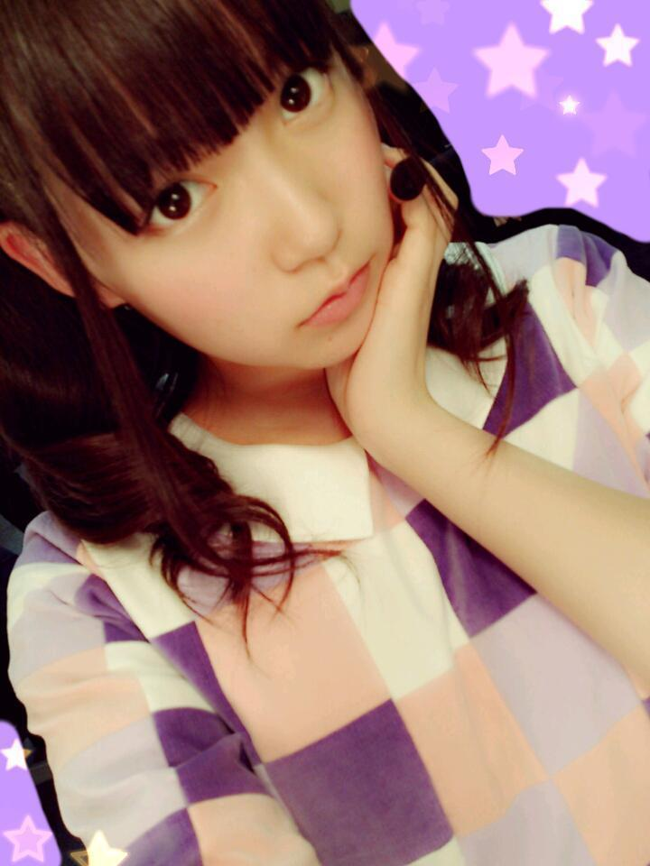
前回の乃木どこの
「あの日 僕は咄嗟に嘘をついた」
スタジオライブ！
ごめんね告知してなかった～
みてくれたひといるかな？
おともだちに
乃木どこ毎週録画してるひといたら
みせてもらってね(＊＾ω＾＊)
＼チーム秋葉原／
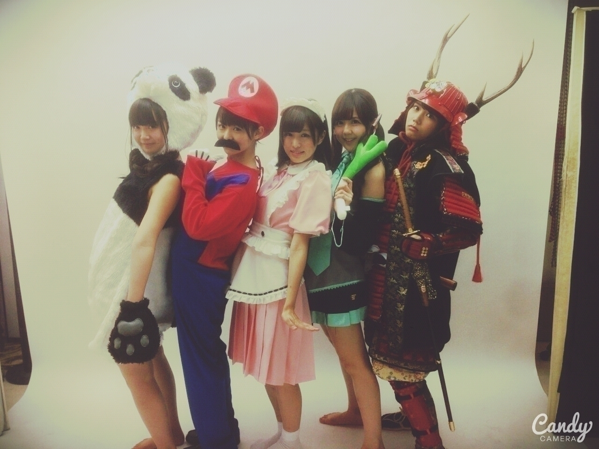
オンエア観たよ
私たちボロボロだったね(笑)
いや、でも、
楽しそうなのは伝わる！
むしろ一番楽しそう！
だって見てよこの華やかな写メ！
陽菜ちゃんなんて甲冑着てるんだよ
秋葉原行ってみたくなる......よね(`ºωº´)
後編もみてね～
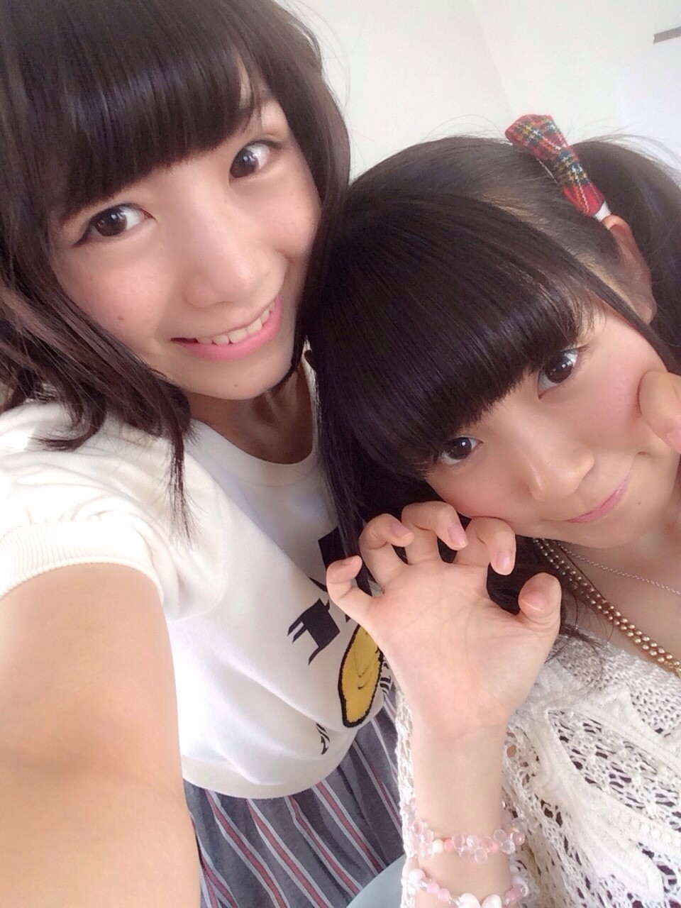
がおー♡
発売中「OVERTURE」の私服
あんまり見えないけど
アクセサリーはままの手作りだったり。
なんかね、
オシャレになりたい～って
愛未ちゃんに相談したら
とりあえず雑誌買ってみなよって。
なるほど～そうだよね( 'ω' )
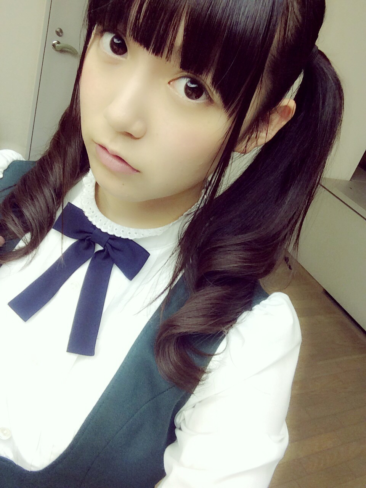
アンダーライブ後半戦！
昨日は真夏さん未央ちゃんが
遊びに来てくれました∩(・ω・)∩
もっと、もっと何か
仕掛けられないかなーって
毎日みんなと話し合って頑張ってるよ～
この写メのツインね
うしろめの位置で結んでもらって
内巻きにするのが最近お気に入りなの～
メルヘンツイン♡♡
ぼーいずはそんなに違いわかんないかな？笑
しばらくこの形でいこっかな～
あ、そういえば
公式サイトのプロフィール写真
変わってた！
なんか眠そう(´-ω-`)笑

 のぎ天で
のぎ天で
「ウサギの感触はひめたんの首の裏と同じ」
っていわれてたけど、あれどういうこと？なるほど、うさぎさんの感触が
触らずとも伝わってしまった( ºωº )
的確な表現だと思いますよ(笑)
ひめたんの日課は？朝スムージーと全身浴\❁/
あとはコメント読むのも日課っちゃ日課～
あぁステキな趣味が欲しい......
ひめたんは前髪どうやってやってるの？
メイクさんがやってるの？いつもメイクさんにやっていただくよ！
ひめたん髪伸びるの早いから
こまめに前髪切ってるけど
カットもメイクさんにお願いしてる。
ひめたんの、一つ年下の女子なんだけど
握手会とかいってもいいですか？
女子1人で行っても大丈夫かな？もちろんだよ(っ´ω`c)嬉しい♡
握手会の会場には
ひめたんと同じくらいの歳のおにゃのこも
たくさん遊びに来てくれるよ～
行き帰りは気をつけておいでね。
ひめたんは
食パンの袋のプラスチックの留め具の
正式名称は知っていますか？むしろ名前あんの(゜ω゜)？←失礼
ひめたんはひめたんびーむで
世界を平和にしてるのに、
なぜノーベル平和賞をもらえなかったの？き、規模が小さいから、かな(震え声)
ひめたんの日記の
コメント欄下２ケタに46を踏んだ方へ
手書きでコメ返するコーナー
＼ ひめたん46 ／
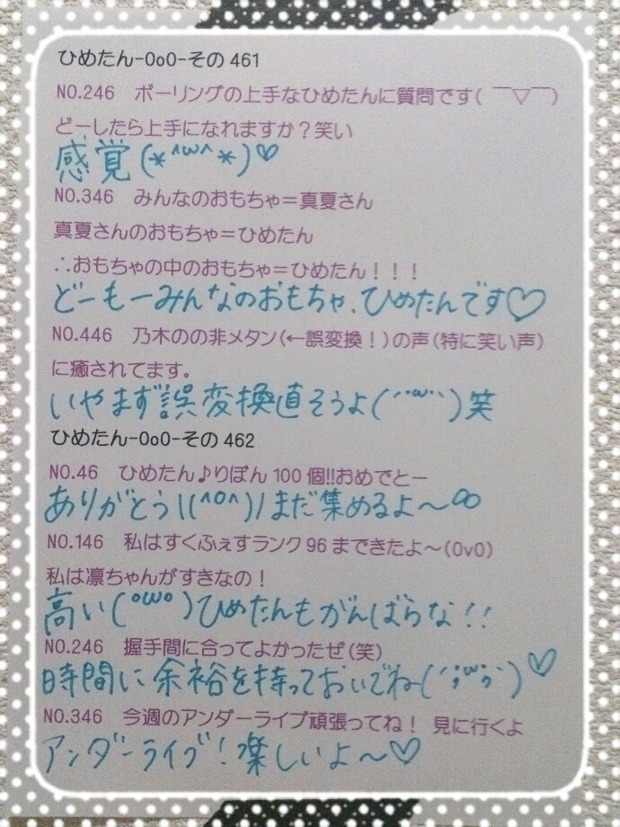
いつもたくさんのコメント
ありがとうございます\( ˆoˆ )/
みんながまめに
ひめたんの日記を読んでは
コメント書いてくれるのが嬉しいから
ひめたんもみんなに負けないように
しょっちゅうコメント読んでる♡
ほんとに負けない自信あーる♡
今日もお仕事してきたよ♪
明日からまた
アンダーライブじゃ(＊＾ω＾＊)
がんばるぞ～
来てくれるみなさん楽しみにしててね！
今日は来年のスケジュール帳
買ったよ♡
みんなはもう買ったー？
(＊´・ω・＊)
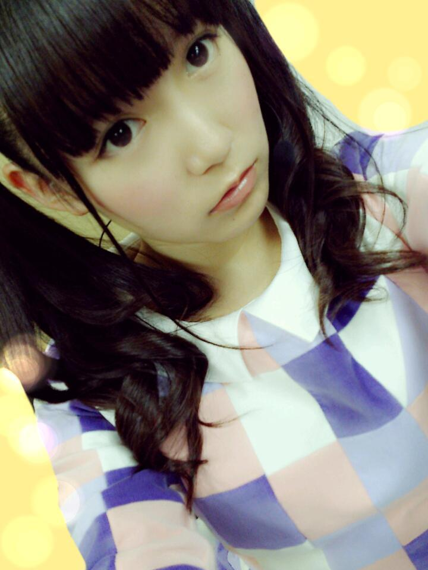
あいかわらず加工が雑\( ˆoˆ )/
「あの日 僕は咄嗟に嘘をついた」歌衣装
前回は10thについて
たくさんの感想いただきました♡
自分の映像作品を観るのは
あんま好きじゃないんだけど
ちょっとチェックしてみよっかなって
コメント読んでて思った(っ´ω`c)てへ
みなさんは、
今回の6曲の中で何が一番好きー？
あ、そうそう
オリコンデイリーチャート1位を
獲得することができました(；ω；)
本当にみなさんのおかげです
いつもありがとうございます♡
みなさんの期待に応えられるよう
ひめたんももっともっと
頑張らねば～
写り込みまいやん♡♡ばー
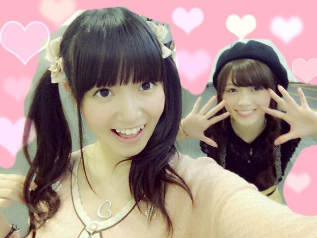
MARQUEE発売になりました(^o^)＊
川後Pがメンバーを
プロデュースする企画なんだけど
第一弾 ひめたん！
陽菜ちゃんからのご指名です♪♪
普段とは違う雰囲気で撮っていただいたの
いやーこんなの自分じゃ思いつかない
さすがプロデューサー！！
インタビューも
いつものふたりらしくて
読んでて楽しいのが伝わってくるはず(笑)
ブラックひめたん∧( 'Θ' )∧
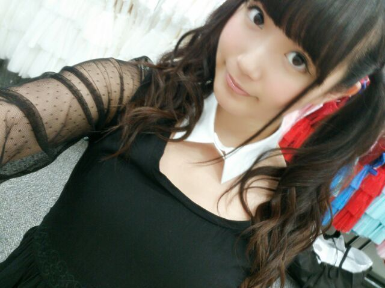
のぎ天はもう観てくれた？
みなさんからの投票が
一番多かったチームには
ご褒美があるんだって！！
チーム秋葉原よろしくね♡♡
食レポ頑張ったし
ぱんださんも着たんだよ(；ω；)にゃー
今日のアンダーライブは
ちーちゃん、いこたん、玲奈さん、
田中将大投手が来てくださいました♡
来てくれたファンのみなさんも
本当にありがとう∩(・ω・)∩
さゆがライブ復帰したよ～
あとは れなちさんも揃って
全員で舞台に立ちたいです！
ライブって一回一回
ちゃんと収穫があるんだなあ
自分の今日のテンションと
みなさんのテンションと
全部が同じ日なんて絶対にないから
そーゆーのを感じながらやるの
とっても楽しい！ライブはなまもの！
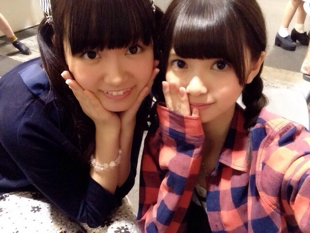
あしゅかりんらーぶぅ(但しビジネス)♡

 藤井アナとは
藤井アナとは
どんなことを話したのかな？娘さんが可愛いんだって話を
ずっと聞いてました(＊＾ω＾＊)
パンダは
「いつもお世話になっております～」
と鳴きますよ！へ～すごーい(白目)
御堂筋くんのモノマネ頼んだら
できますか？？www( ◉◉ )ｷﾓｯｷﾓｯｷﾓｰ
ひめたんうどんとそばどっちが好き？そば派かな～
うどんはたくさん噛まなきゃだけど
ひめたん噛むの苦手なんよ～
ひめ♡って呼ばれるのと
ひめたん♡って呼ばれるのだったら
どっちがいいー？？どっちも嬉しいからみんな
呼びたいように呼んでね♡♡
「ひめたん」でアイドルモード
「ひめ」でお姫様モード発動！
ひめたんの日記の
コメント欄下２ケタに46を踏んだ方へ
手書きでコメ返するコーナー
＼ ひめたん46 ／
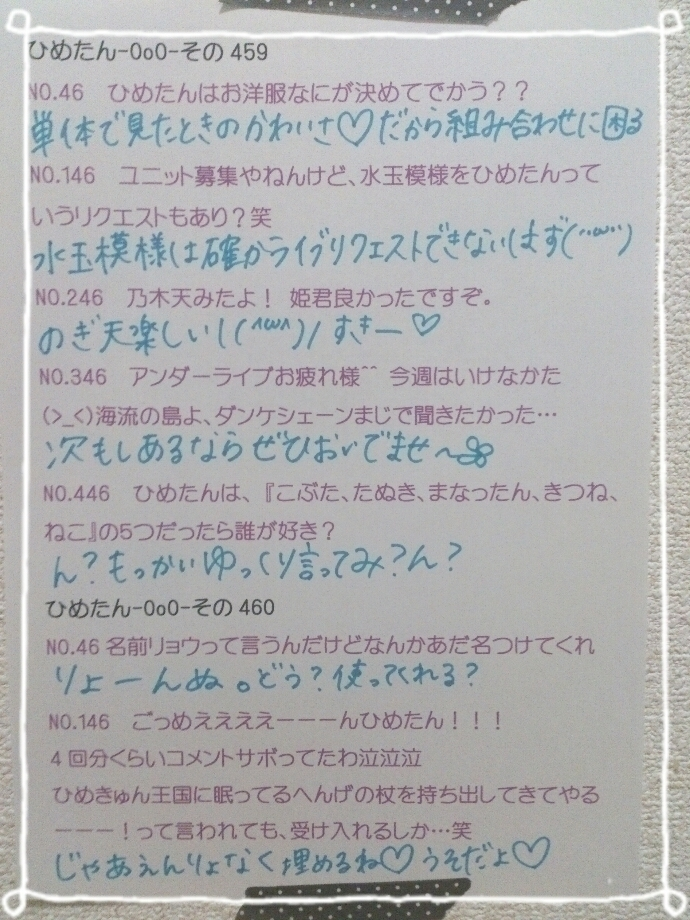
いつもたくさんのコメント
ありがとうございます
寒くなってきたね～
台風も近づいてるみたいだし
アンダーライブとぶつからないといいな
昨日の休演日は収録してたよ
はやく告知したいな～:(´◦ω◦｀):♡
アニメも録画溜まってるけど
ライブ終わるまでは追い付けないかも。
今日ゆったんとKTKと3人で楽屋で
アニメ話で盛り上がったの
楽しかった(＊＾ω＾＊)
スクフェスはイベントやってるよね
かよちん狙えるかな～
もちろん頑張るけど届くかな～
ぱんださんの鳴き声は
いろいろお返事いただいたよ
いっこ「あ～これかも！」って
思ったのがあったんだけど
なんだったっけ忘れちゃった(゜ω゜)
ライブ終わったら映画行きたいよ
らり姉さん映画連れてって～～♡
(＊´・ω・＊)
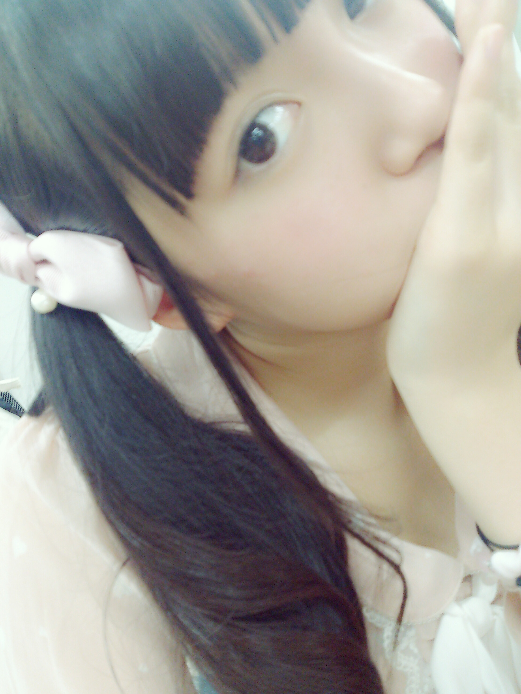
本日10thシングル
「何度目の青空か？」発売！
無事に今日を迎えることができたのは
本当にみなさんのおかげです
ありがとうございます(；ω；)
10thは いくちゃんセンター
復帰してから今日まで頑張っている姿を
隣で見てきたからこそ
今回のシングルはたくさんの方に
聴いていただきたいと思います！
それと、乃木坂には60曲あるけど
中3組みんな揃って歌う曲は
実は「私、起きる。」が初めて♪
＊今回の参加楽曲＊
「私、起きる。」
(高校生10人ユニット)
「あの日 僕は咄嗟に嘘をついた」
(アンダー楽曲)
個人PVは 大山徹 監督に
撮っていただきました！
暖かい現場だった～＊
差し入れのシフォンケーキが
今まで食べた中で一番美味しかった♡♡
作品は観ていただけたらわかるんですが
まあいろんなことをしました\( ˆoˆ )/
お絵かきとかもしました～
観たよ～ってひとはぜひ
感想聞かせてほしいなっっ
ユニットは、いつも
お姉さんたちいいな～って
ずっと思っていたので
今回JKみんなで歌うことができて
嬉しい気持ち(＊＾ω＾＊)
ツギハギチェックメイト
よろしくね♡笑
アンダー楽曲はダンスがかっこよくて
「ここにいる理由」とはまた違った路線の
ダンスナンバーになっているのですが
MVは全てお芝居しているから
ライブやスタジオライブでみるまで
お楽しみってことかな♪
MVではガブリエル役を演じる役。
「あの日 僕は咄嗟に嘘をついた」
MVの制服\❁/
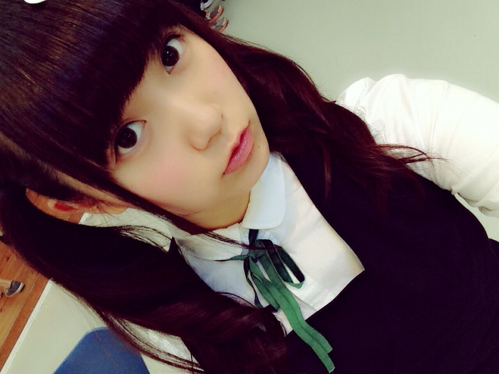
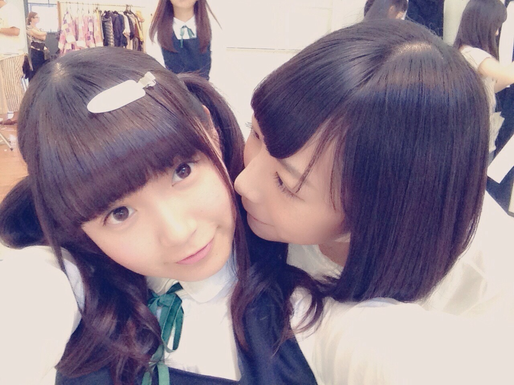
NOGIBINGO!3放送スタート(・ω・)
放送圏にお住まいのみなさん
観てくれましたかー？
今回のNOGIBINGO!3のテーマは
苦手を克服しよう～みたいな。
#1は1カットタイトルコール
難しかった～(>_<)
緊張とかプレッシャーとか！！
永島・堀・中元の常識クイズチームは
メガネチームがミス連発してる間
藤井アナと4人で雑談してました～＊
来週も出るよー観てねー
それから、NOGIBINGO!3公式サイトで
みなさんからの妄想を
募集してるみたいなんだけど
ひめたんあのコーナー
大好きなの♡♡
みんな～待ってるよ∩(・ω・)∩
アンダーライブも順調～
今日はゆみ姉、まいまい、かずみん、
ななせまる、若月、ちはる、みなみ
も遊びに来てくれたんだ♡
さゆが今日は
大事をとってお休みになったけど
気持ちは全員で踊ってます(っ´ω`c)
れなちさんも回復に向けて頑張ってるから
みんな応援よろしくね！
最初はミスなくできるかな～とか
不安なことが多くて
いっぱいいっぱいだったけど
今日はやっとリラックスして
ファンのみなさんと目合わせたりとか
きゅんきゅん王国民さんを探したりとか
できる余裕が生まれた(；ω；)♡
ぴんくのサイリウムとか
ひめたんタオルとかひめたんうちわとか
たくさん見えて元気になるよ～ありがとう！
明日は休演日ですが撮影がありまーす
がんばるぞー∩(・ω・)∩
応援しててねっ
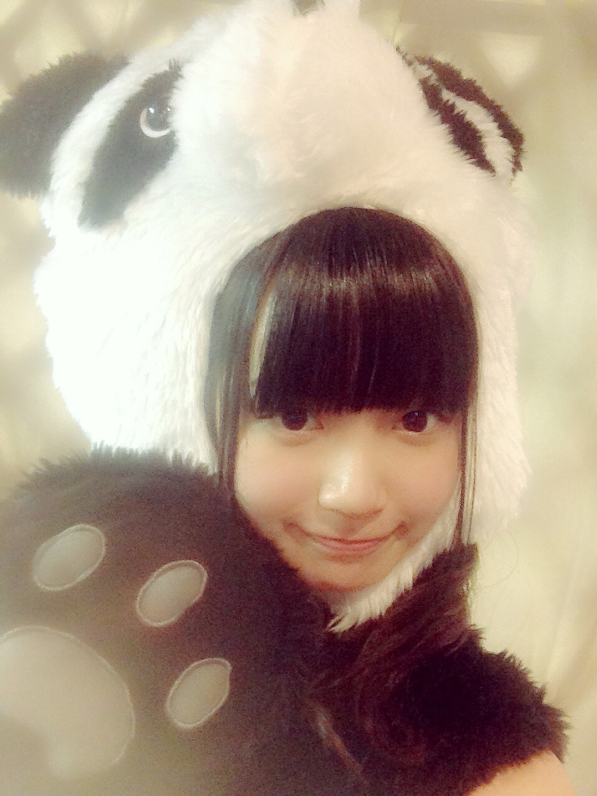
のぎ天！街ブラ～♪
チーム秋葉原 レポ頑張ったよ♡♡
みて......にゃん？
パンダって何て鳴くの？

 ひめたーん。ずばり
ひめたーん。ずばり
アンダーライブのいいところはなんですか？
３文字で答えてください。「一体感」
いや普段のライブでも当然感じるけど
アンダーライブでは一段と＊＊
ひめたんがプリンの次に
好きなスイーツな何ですか？ミルフィーユ！
ショートケーキとかは日によって
あ～そんな気分じゃないーとか
なりそうだけど
ぷりんはいつどんな時でも美味しい～
ひめたんの乃木メール撮ってたら
いつの間にかひめたん推しに
なってたんだけど
このまま推してて大丈夫ですか？きゅんきゅん王国入国ー♡♡
ふー( ´ ▽ ` )楽しい国だよ
国民さんはメルヘンなひと多いよ～
ひめたんって、
毎日何時に寝て何時に起きるの？
寝つき寝起きはいい方？寝るのが遅い日でもはやく目覚めちゃう
寝起きはめちゃめちゃいいですよ～
寝つきは......うーーん( ˙Ο˙ )
ひめたんが好きな童話って何？おやゆび姫！
ひめたんの日記の
コメント欄下２ケタに46を踏んだ方へ
手書きでコメ返するコーナー
＼ ひめたん46 ／
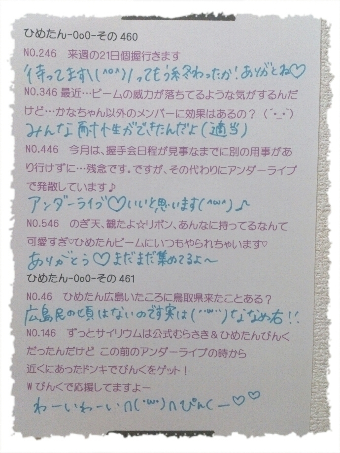
いつもたくさんのコメント
ありがとうございます！
前回は本当に多かったなあ(゜ω゜)
何効果？おでこ？おでこかなあ
ひめたんのでこ出し好きなので
ぜひこれからもやってくださいって声を
たくさんいただいていましたけれども
本当にやるつもりはないんだけど(笑)
でも反響に正直ちょっとびっくりしました
てことで考えておきます♡♡
あと円周率！
みんな結構知ってるんだね
なんで？天才なの？
最高で下68桁書いてくれてるひといた～
小6の おにゃのこだった♡
数字多すぎて思わず数えた(゜ω゜)
ちなみにひめたんの記憶の
奥底から引っ張り出した円周率は
下7桁目？から違ったみたい......しゅん
教えてくれたみんなありがとうねー♪
(＊´・ω・＊)
「私、起きる。」MV予告編が
公開されました～
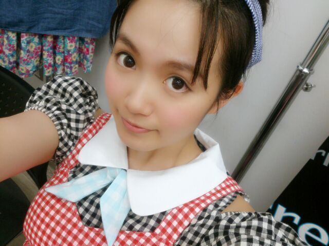
これが噂のでこひめ
普段は前髪を分けることもなく
完璧におでこを守ってるつもりだからね
まライブとかでは崩れちゃうけどね
今回のすべての曲が
世に出揃ったところで
ひめたんの参加楽曲を確認！
Type-A 個人PV
Type-B 私、起きる。
Type-C あの日、僕は咄嗟に嘘をついた
あ、全部ばらばらみたい(´-ω-`)ぱー
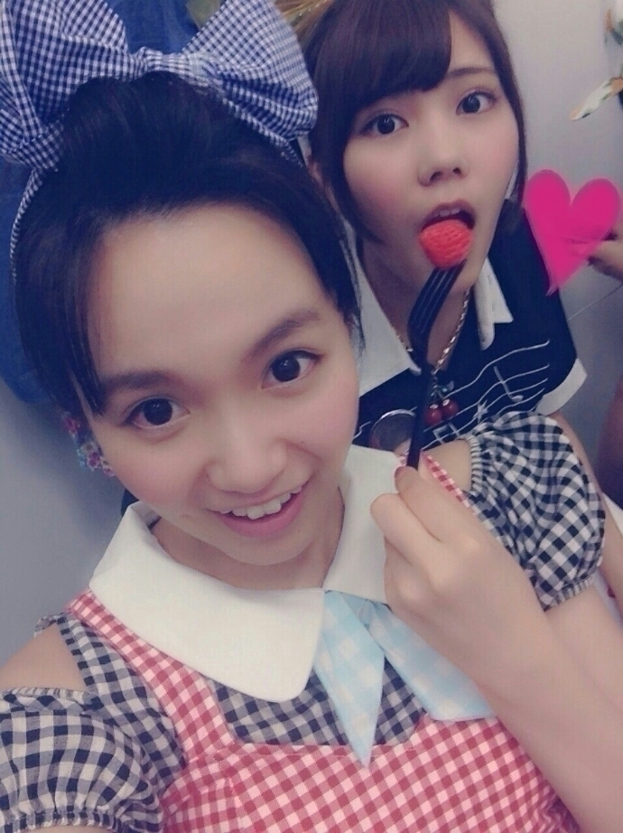
Himetan♡
NOGIBINGO!3
10/6放送スタート＼(^o^)／
#1から楽しく収録してきたよ～
毎週月曜日25:29~
雑誌「OVERTURE」
創刊号でのぎのぎ特集をしてくださっています！
みんなの私服とかインタビューとか
たくさん載っているので
ぜひチェックしてみてね♪
雑誌「MARQUEE」
川後Pの......おっとっと
この先はまだ陽菜ちゃんブログに
書いてないんだね(笑)
とにかく一緒に載ってます♪
のぎ天
10月から毎週火曜日配信になります
#13は街ブラ！
チーム秋葉原頑張ったよ～
10/1より私たちのニューシングル
「何度目の青空か？」が
フルサイズの配信もスタートしました！
レコチョク：http://bit.ly/1rzMDEe
iTunes: http://bit.ly/1DUYpQ3
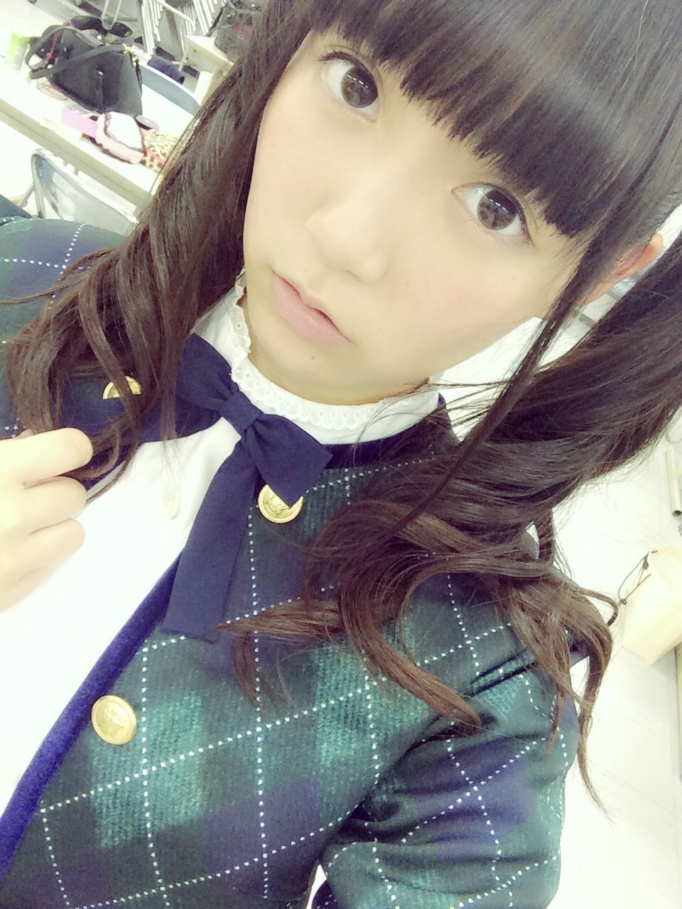
そして今日は
アンダーライブ初日でした\❁/
いよいよはじまった！
今日を皮切りに千秋楽まで
一人も欠けることなく突っ走ります！
そうそう、前回の日記で
たくさん質問来てたけどコールは
＼ひめたん／でお願いします♡
あまり詳しいことは言えないんだけどね
前回のライブとはまた違ったものに
なってるんじゃないかな～って
これみんな言ってるよね(笑)
まあまあ！なんていうか
ひめたん的には今日を無事に終わることできて
まずは一安心かな( ˇωˇ )ひ～めひめ～ひめ～
これからやーってひとは楽しみにしててね！
今夜は台風が近づいてくんだね(´・ω・｀)
明日晴れますように......♪

 団扇の文字ひめにしようと思うんだけど、
団扇の文字ひめにしようと思うんだけど、
ひめだけでも嫌じゃないかな？？嫌じゃないしむしろ嬉しい！
ひめた～んももちろん嬉しいし
ひめ～って呼ばれるのも最近好きなの♡
ありがとう絶対見つけるね(っ´ω`c)
ひめたんがもし、
舞台で役を演じるとしたら、
犬、猿、雉、鬼、木のどれがいい？幼稚園の年長さんの時に
桃太郎の劇をして
モモの片割れになったことならあるよ～
ひめたんは、私に似てるなぁって
アニメキャラは今までいた？「たまこまーけっと」のあんこちゃんに
似てるってさゆりんごに前言われた♡
ひめたん結び最近はしてないなあ
 さゆりんごパンチがグーで
さゆりんごパンチがグーで
ひめたんびーむがチョキだとしたら
パーはなんだろ？ んーーーーななせまる！
これしか＼(^o^)／
乃木坂じゃんけん＼(^o^)／
ひめたん円周率円周率(^o^)／3.1415923575
あー限界。
この続きはググらんとわからにゃー
次38？あってる？誰かー
ひめたんの日記の
コメント欄下２ケタに46を踏んだ方へ
手書きでコメ返するコーナー
＼ ひめたん46 ／
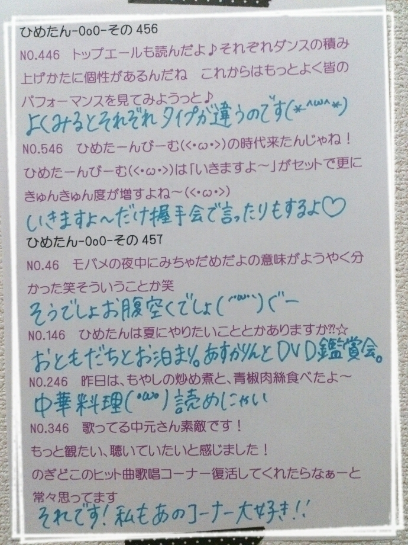
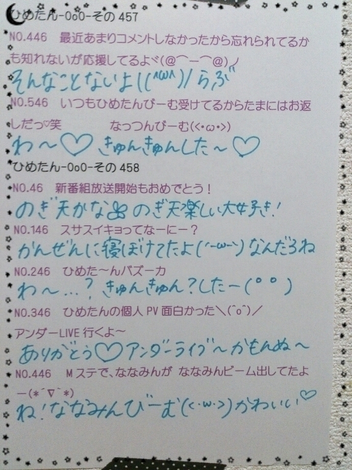
いつもたくさんのコメント
ありがとうございます
みんなのアニメトーク面白い♡
コメント観てたらさらに
チェックしなきゃな作品が増えたよ～
ラブライブえりち推しだよー
ことりちゃんも好き(・8・)
他にも、エンタメの感想とか
めーるのお返事とか
全部全部嬉しい！
時間かけても、全部読んでから
新しい日記を書くようにしてるんだー♪
そうそう、ろってぃーのブログは見たー？
ひめたんびーむに対抗する技を
募集中なんだって～
ひとつ言っておくと
ひめたんびーむは結構強力よ♡♡
でもろってぃーといつか
必殺技でバトルとかやってみたい(笑)
みんなで一緒に考えてみよ！
(＊´・ω・＊)
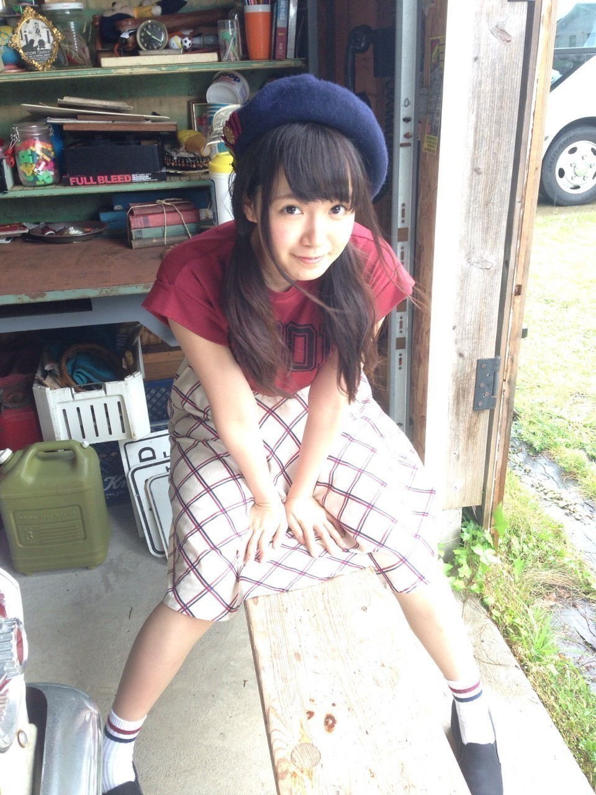
月刊エンタメ 発売されました！
いつもの高めのくるくるついんてーるの
ひめたんではない
いろんなひめたんが見られますー♪
まあやとのペアってのが
もうすごく嬉しい♡
大人っぽい表情とか普段はしないし
部屋着のカットは個人的にちょっと抵抗が
あったりもするんですが( ºωº )
ひめたんにとっては久々のグラビア
あんまりこんな機会ないし
撮影もとっても楽しかったです！
インタビューのまあや
かわいかった（；；）♡
十人十色～
いくちゃんのインタビューや
MV撮影オフショットもあるよ～
そうそう、月刊エンタメさんね
ひめたんがぷりん好きだからって
差し入れにぷりんあったの！
すてき\❁/
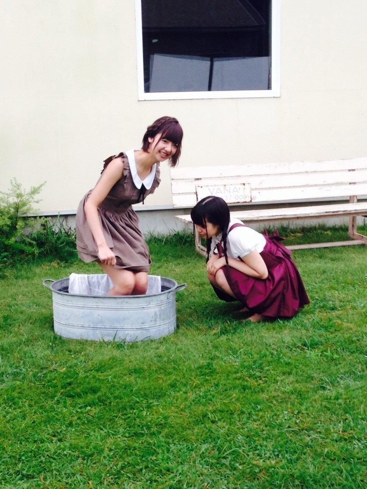
今日はいくちゃんの舞台
「虹のプレリュード」観ました♡
いくちゃんはこの舞台のために
ものすごく頑張っていたから
絶対観たかったんだ！
ストーリーとか
ここがよかった～とか言えないけど
とにかく感動(´;ω;｀)うる～
「虹のプレリュード」のヒロインは
いくちゃんにしかできないって
思いました♡
出演者のみなさん スタッフのみなさん
すてきな舞台をありがとうございました
いくちゃん千秋楽まで頑張ってね！
さゆひめ～
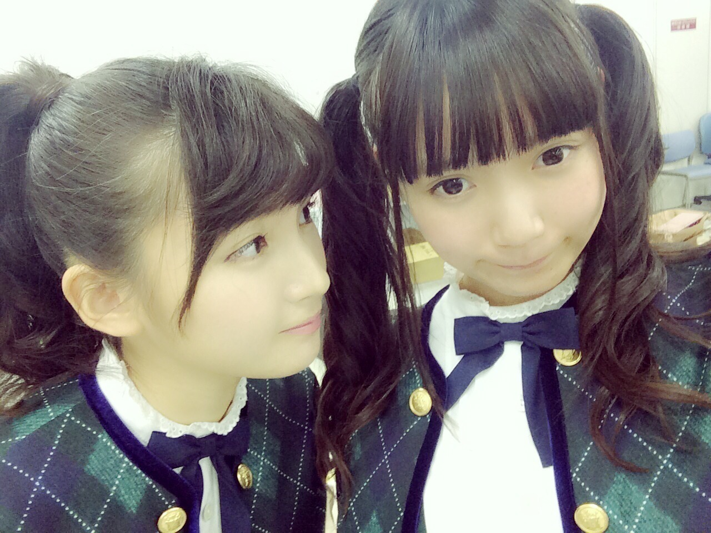
さて、アンダーライブ直前！
いよいよ始まるよ(＊>ω<＊)
サイリウムのおさらい
ひめたんしかーのひとは
ぴんく×ぴんくでお願いします♡
うちわで片手がふさがってるあなたは
一本で大丈夫だよ～
ひめたんも好きだけど
他にも推しがいるあなたも
片手はぴんくだと嬉しい( ´ ▽ ` )
ひめたんうちわ ひめたんタオル
ひめたんTシャツとかあったら
もう意識高い！
前の握手会の時にね
ひめたんうちわ作ったの～って
何人か教えてくれたから
楽しみにしてるんだ
ひめたんコールもたくさん待ってるよ♡♡
そうそう、ひめたんも
みんなに見つけてほしいから
先に言っておくけど
とりあえず前半は
いつもの高めついんてーるくるくるで
ライブに挑みます ⌒°( ^ω^ )°⌒
後半はもしかしたら
飽きて変えちゃうかもだけどね(笑)
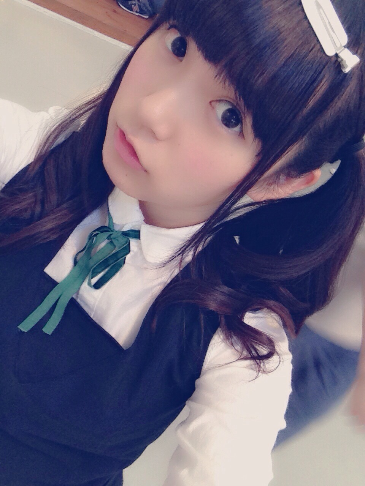
アンダーMVの制服
アンダー曲MV予告編公開されました！
みんな観てねー♪

 コスプレとして
コスプレとして
握手会に制服着てっても大丈夫？制服＼(^o^)／
もちろん大丈夫だよー♪
ひめたんもいつか制服着ようかな～
月刊少女野崎くんでは
どのキャラが好きですか？前野先生 私は嫌いじゃない派よ(笑)
やっぱ一番は千代ちゃんかな～
千代ちゃんみたいなヘアいつか
やりたいな♡りぼん♡♡
最近ひめたんから釣りメールがきて
ぱやぱやしてるんですが
どうしたらいいですか？違うの、ほんとに
そんなめーる送ったつもりはないの
ああ泣きそう(；ω；)
ここで説明したってどうせ誰も
信じてくれないんだろうけどさ(；ω；)
真夏さんの運動音痴詐称疑惑は
白ですか？黒ですか？ひめたんは黒だと思いますね←褒めてる
ひめたんびーむって使い過ぎたりして
MPが足りなくなったりしないんですか？スクフェスみたい♡
まだ出る？もう疲れたでしょ？
とか聞かれるけど
スタミナよりも手が疲れるかな(笑)
スクフェスのイベント忙しく
コメント遅れた...笑こら～(｀・ω・´)
ひめはイベント中も日記書いたぞ
＼うみちゃーん／
ひめたんの日記の
コメント欄下２ケタに46を踏んだ方へ
手書きでコメ返するコーナー
＼ ひめたん46 ／
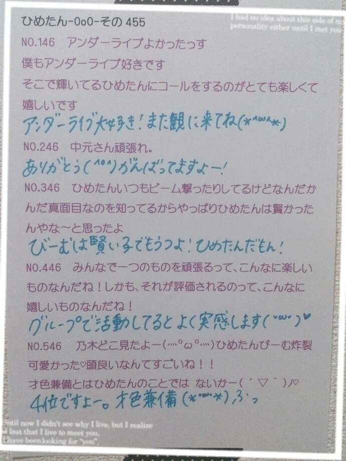
いつもたくさんのコメント
ありがとうございます
あのね、前にもかりんちゃんが
ブログに書いてたけどね
ひめがめーるで
かりんちゃんのかわいい寝顔を
盗撮したんですよ～
そしたらかりんちゃんにバレちゃって
仕返しに今度ひめの寝顔を撮るらしい♡
んあ、忘れてたー秋アニメ！
アカメが斬る！(継続)
弱虫ペダル GRANDE ROAD
TERRA FORMARS
俺、ツインテールになります
オオカミ少女と黒王子
旦那が何を言っているかわからない件
あたりを観ようかな♪
ジャンルばらばら(笑)
ほかにもおすすめなのあるー？
(＊´・ω・＊)